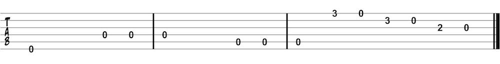

Tablature
Tablature, or “tab”, is one of the most common ways to notate guitar music. Tablature is sometimes looked down upon by purists but has actually been around longer than standard notation. A combination of tab and standard staff notation can often be the best way to specify where to play a note.
Tablature uses six lines which each represent one of the six guitar strings. The low (sounding!) E string is the bottom line and the high E string is the top line. Numbers placed on the line indicate which fret to play. The string is specified by which line the number is on. Tabs may also use beams for rhythmic notation. It is good to become familiar with standard notation and tablature.

Tablature etudes
An etude is a short musical composition used as an exercise to focus on a specific skill. Use these etudes to practice reading tablature notation.
Tablature etude one
This etude is played all on the first string. Use the fret markers at the 3rd, 5th, 7th, 9th, and 12th frets to help you find your way around the guitar neck.

Tablature etude two
The first part of this etude uses all open strings. Pay close attention to skipping your pick over the fifth string and up to the fourth string then back down. The last six notes of this etude come from a scale you will learn later in this book called the E minor pentatonic scale.
Tablature etude three
The final tablature etude is “Mary Had a Little Lamb.” You will later learn to read this same song with standard notation. Singing the song in your head while playing will help you play the correct rhythms.

Tip: while there are many websites with TABs, many of them are incorrect
because they are user
submitted. Two of my favorite sites for finding accurate TABs are
Songster and Ultimate
Guitar